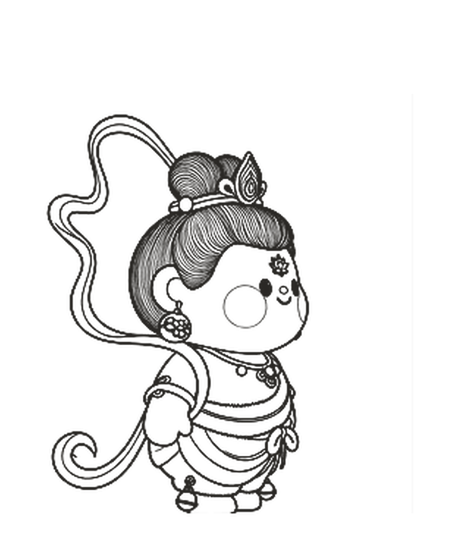
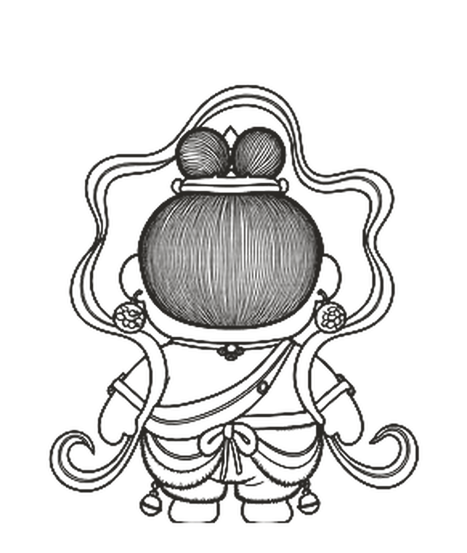
IP / CHARACTER UNIVERSE
这一章从“如何辨认一个角色”开始：轮廓、情绪与行动方式共同形成记忆，再向故事和媒介延展。
ACT 01 · AN ORIGINAL IP UNIVERSE
ACT 02 · EVOLUTION
同一角色结构，在二维设定与三维形象之间保持一致。
2D SYSTEM — 3D FORM

ACT 03 · STORY FRAMES
角色与场景的情绪共鸣。

PERSONAL IP / 阿瑶
个人原创 IP。以场景、动作、表情与服装，持续记录一个创作者的多重身份。
SELECTED WORLDS / 视觉切片
04 / 04 · 场景
PERSONAL IP / 福小灵 · NEW
把福气带到你身边。
一朵红花长成的吉祥物，围绕「浙里有福 · 好运修理铺」展开：从角色规范、标志、色彩与字体，到快闪活动、彩票店文创、集章路线和数字应用，一个角色撑起一整套品牌系统。
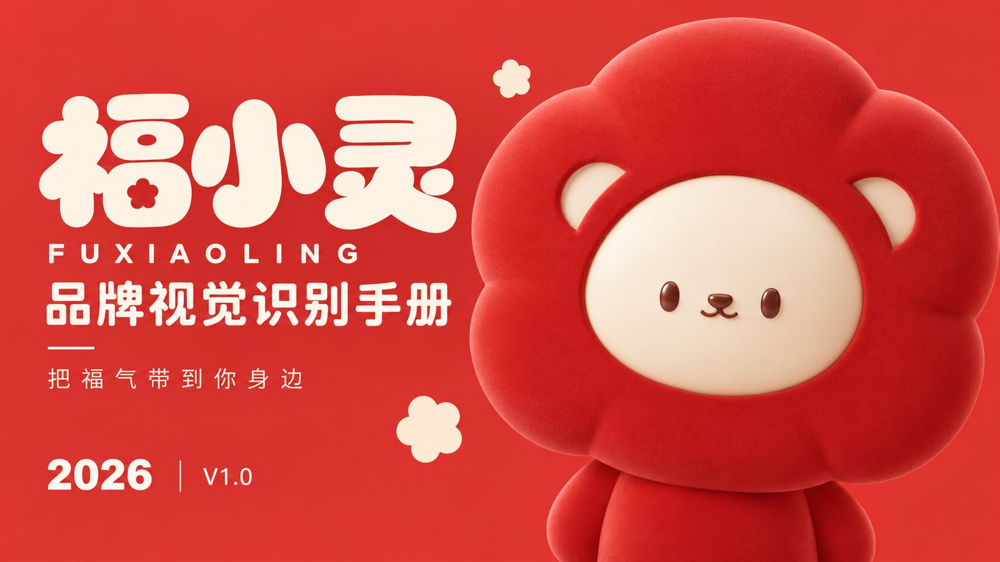
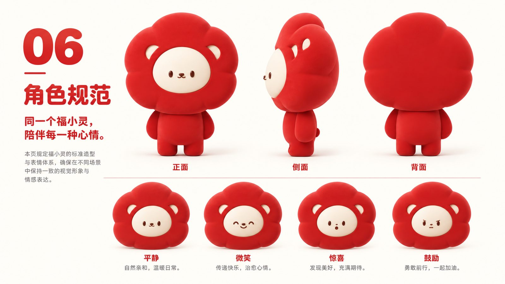
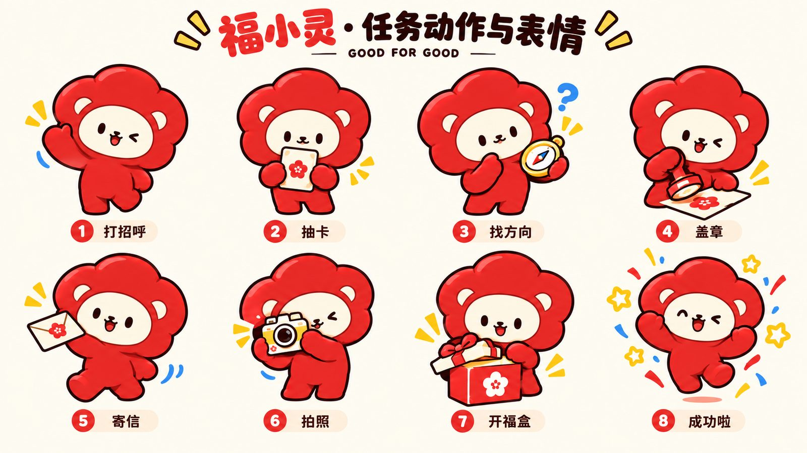
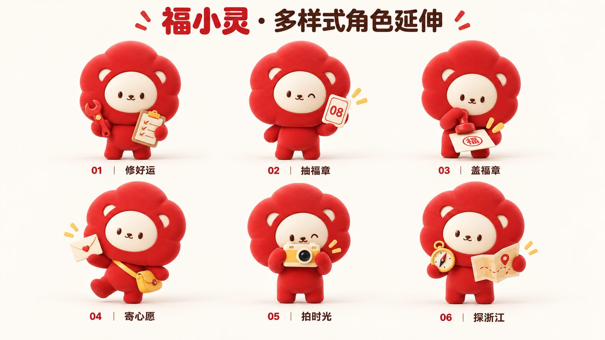
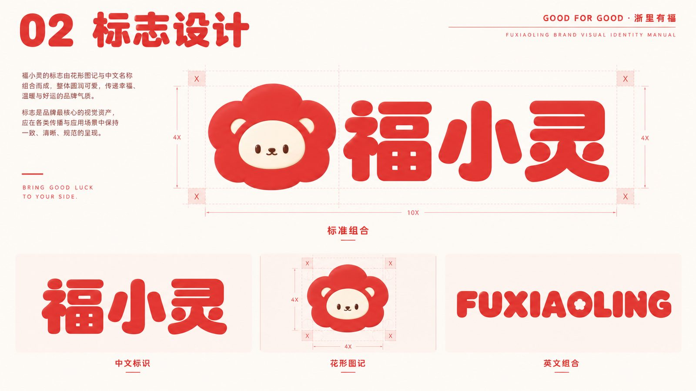
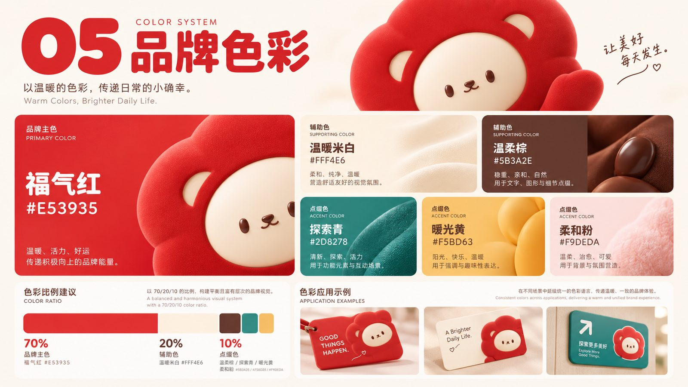
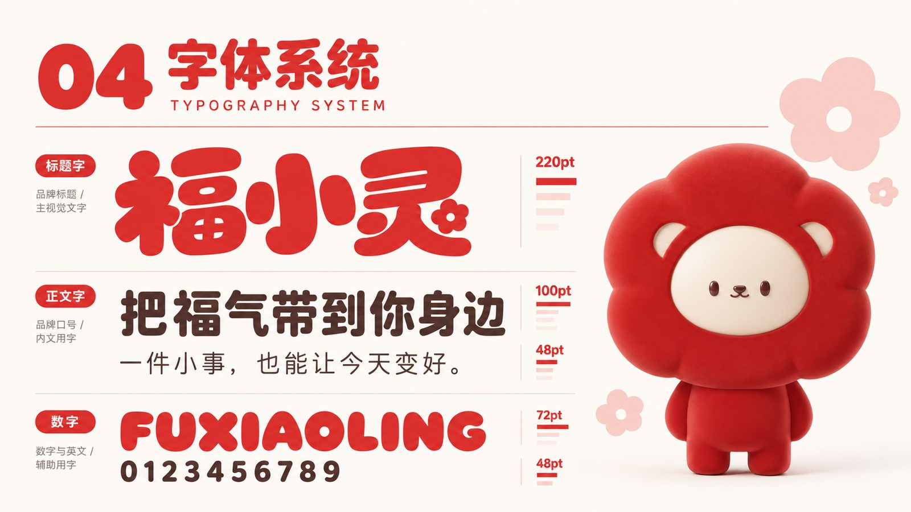
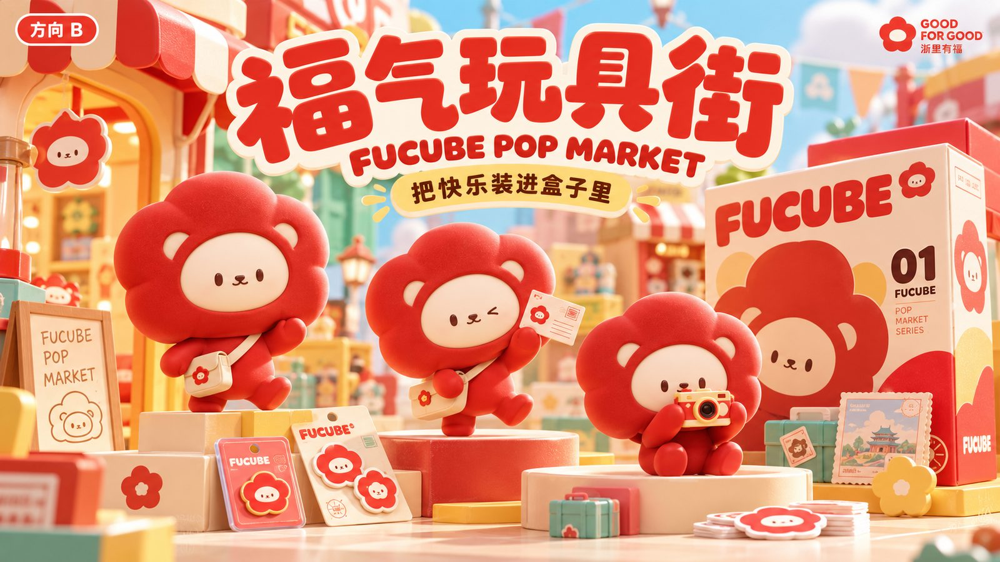
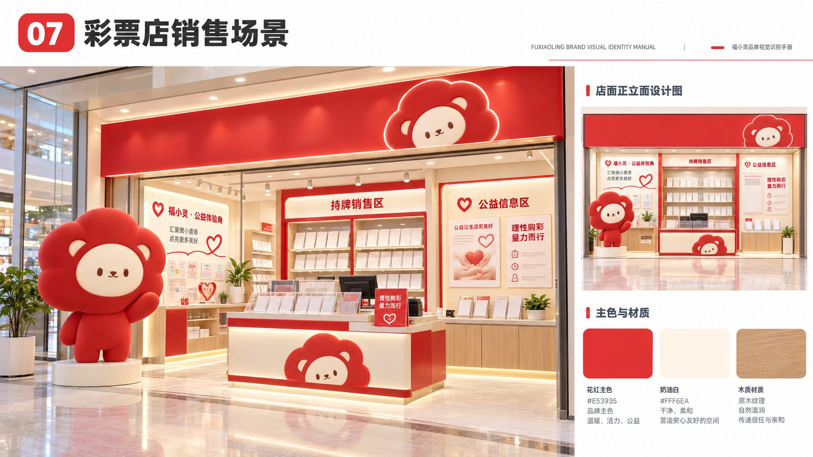
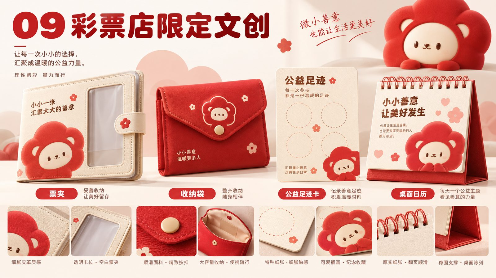
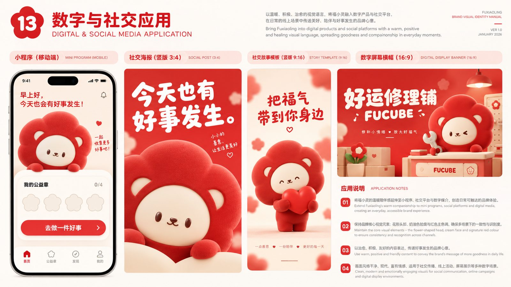
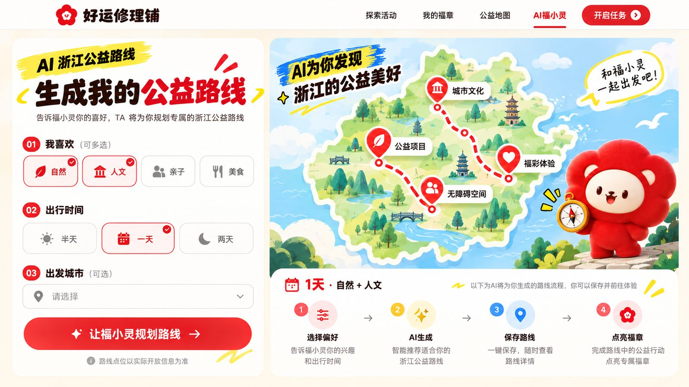
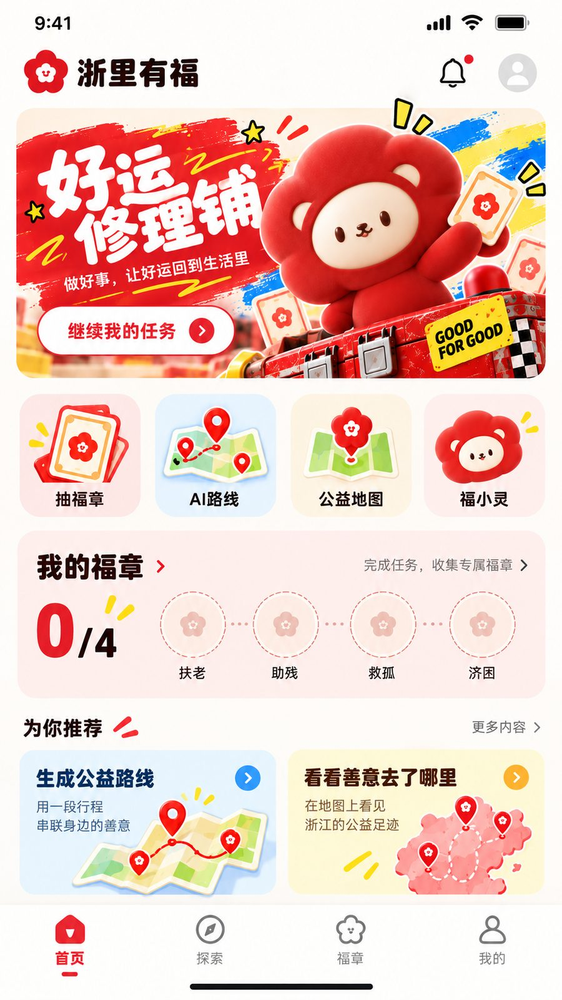